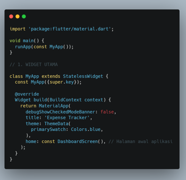
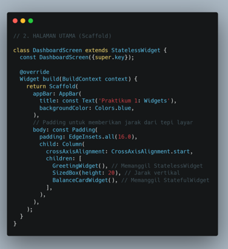
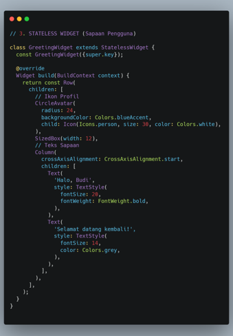
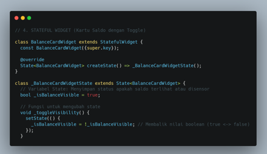
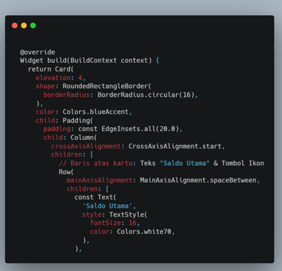
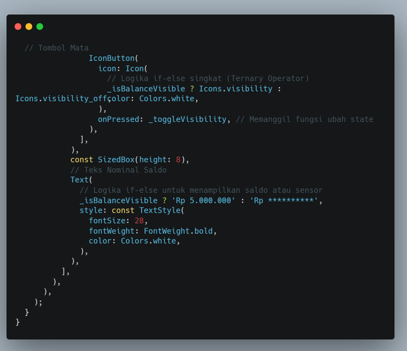
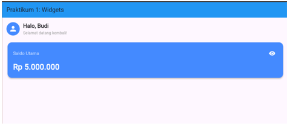
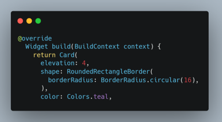
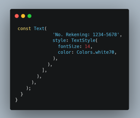
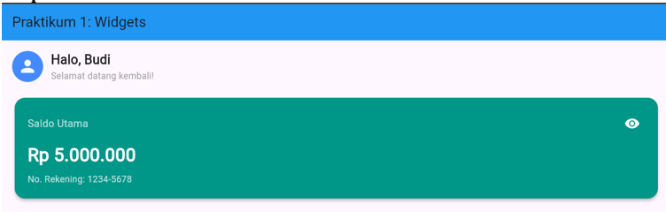

Praktikum 2 Modul 1
Laporan Praktikum Widget Flutter - Expense Tracker
Laporan Praktikum Widget Flutter - Expense Tracker
PENDAHULUAN
Pengembangan aplikasi seluler modern menuntut pembuatan antarmuka pengguna (UI) yang responsif, terstruktur, dan interaktif. Flutter sebagai framework open-source berbasis bahasa pemrograman Dart menyediakan berbagai komponen penyusun antarmuka yang dikenal sebagai widget. Dalam arsitektur Flutter, widget merupakan fondasi utama yang mengatur seluruh struktur tampilan, mulai dari komponen tata letak dasar hingga elemen antarmuka yang kompleks. Oleh karena itu, pemahaman mendalam mengenai kerangka dasar seperti MaterialApp dan Scaffold menjadi langkah awal yang sangat penting dalam membangun aplikasi seluler berbasis Flutter.
Secara umum, Flutter membagi komponen antarmuka menjadi dua jenis utama, yaitu Stateless Widget dan Stateful Widget. Stateless Widget digunakan untuk menampilkan elemen UI yang bersifat statis dan tidak mengalami perubahan data setelah dirender. Sebaliknya, Stateful Widget digunakan untuk elemen UI yang dinamis dan dapat merespons interaksi pengguna melalui manajemen status internal menggunakan fungsi setState(). Melalui praktikum ini, pembuatan aplikasi Expense Tracker sederhana digunakan sebagai studi kasus untuk memahami penerapan kedua jenis widget tersebut secara langsung.
TUJUAN
- Mahasiswa mampu memahami kerangka dasar pengembangan aplikasi Flutter dengan mengimplementasikan komponen MaterialApp dan Scaffold.
- Mahasiswa mampu membedakan serta menerapkan penggunaan Stateless Widget untuk antarmuka statis dan Stateful Widget untuk komponen dinamis.
- Mahasiswa mampu menerapkan fungsi setState() untuk mengelola state dasar dalam menciptakan tampilan antarmuka yang interaktif.
ISI

Kodingan di atas berfungsi untuk merupakan struktur utama aplikasi Flutter yang dimulai dengan fungsi main() untuk menjalankan MyApp sebagai titik masuk program. Kelas MyApp bertindak sebagai Stateless Widget dasar yang me-return MaterialApp untuk mengatur konfigurasi global seperti tema warna biru dan judul 'Expense Tracker'.

Kodingan di atas berfungsi untuk menjelaskan halaman utama DashboardScreen yang menggunakan Scaffold sebagai struktur dasar tampilan aplikasi. Bagian appBar menampilkan bilah atas berwarna biru dengan judul 'Praktikum 1: Widgets'. Pada bagian body, digunakan Padding dan Column untuk menyusun GreetingWidget dan BalanceCardWidget secara vertikal dengan jarak tertentu.

Kodingan di atas berfungsi untuk menjelaskan GreetingWidget sebagai stateless widget untuk menampilkan komponen sapaan pengguna secara statis. Menggunakan layout Row, bagian kiri menampilkan ikon profil berbentuk lingkaran dengan latar warna biru. Di sebelah kanan ikon, terdapat Column yang menyusun teks nama 'Halo, Budi' dan ucapan 'Selamat datang kembali!' secara vertikal.

Kodingan di atas berfungsi untuk menjelaskan BalanceCardWidget sebagai stateful widget yang memungkinkan tampilan kartu saldo dapat berubah secara dinamis. Di dalam kelas _BalanceCardWidgetState, dibuat variabel _isBalanceVisible bertipe boolean untuk menyimpan status apakah saldo sedang ditampilkan atau disensor.


Kodingan di atas berfungsi untuk membuat sebuah Card berwarna biru yang berisi tata letak informasi saldo serta tombol interaktif. Menggunakan ternary operator, bentuk ikon mata pada IconButton dan teks nominal saldo akan berubah secara otomatis sesuai nilai _isBalanceVisible. Ketika tombol mata ditekan, fungsi _toggleVisibility dipanggil untuk menyembunyikan atau menampilkan angka nominal saldo Rp 5.000.000.

LATIHAN

Ubah warna tema BalanceCard dari biru (Colors.blueAccent) menjadi hijau emerald (Colors.teal). Kodingan bagian color berfungsi untuk mengubah warna tema balanced card dari biru menjadi warna hijau teal.

Tambahkan teks statis berupa "No. Rekening: 1234-5678" di bagian bawah nominal saldo di dalam kartu. Kodingan di atas berfungsi untuk menambahkan teks statis berupa No. Rekening di bagian bawah nominal saldo di dalam kartu.
